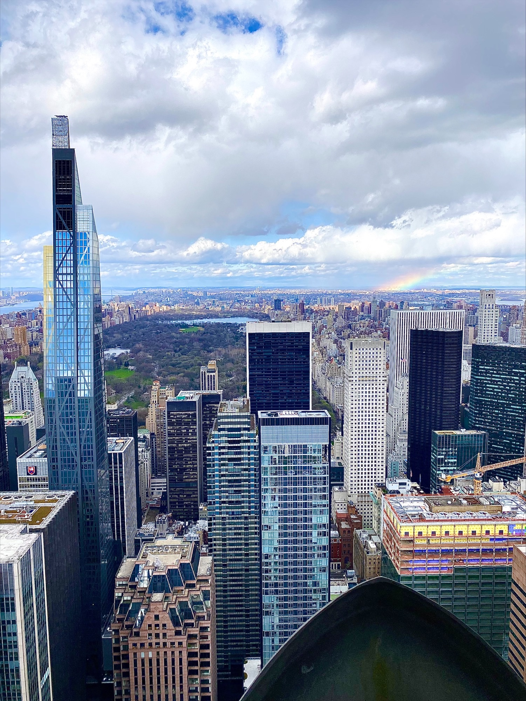
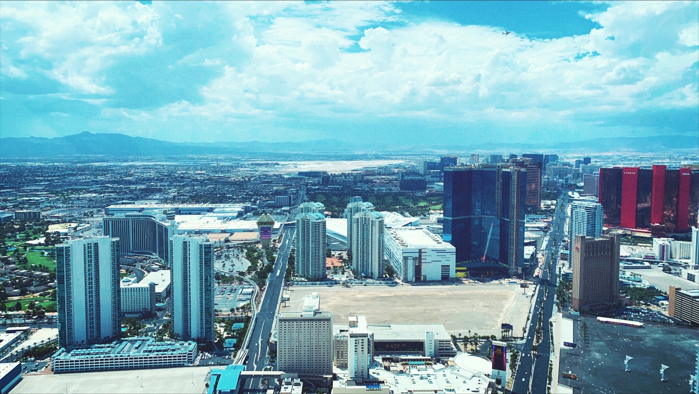

Top 3 Cities I've Visited!
1. New York City
Now I know this is a pretty common answer but it totally should be! I've only gone once but it truly was so fun, as someone not from a city it was so cool to navigate the subway and walk everywhere.

When I went to NYC I got to visit a restaurant I've always dreamed of going, "Sarabeth's" I found this restaurant in the second grade and I was so happy to finally go. The 9/11 memorial is a must go and doing all the touristy things around the city was so exciting. There's so many hidden gems in the city but times square is not something I miss from the city.
2. Las Vegas
A lot of people will not agree with this but I love Las Vegas, I'm also biased because my whole dads side of the family lives there. The actual city is kind of gross especially the strip but the hotels like the Cosmopolitan and Aria try and make the city a lot more luxourius and the hotels really feel like a resort.  Driving around with my parents on the outers of the city was so interesting learning about where they grew up. I've been to vegas about 4 times and when your there hiking in the Sierra Nevada Mountains is so beautiful, if you go during the spring the mountains still have snow on them and it is beautiful. Vegas has a lot to offer when you look outside of just the inner city.
3. Huntsville
This is a growing town in Alabama about 15 minutes away from Decatur. I went here once for a soccer trip and I wish I could've stayed longer! On Main street there are so many restaurnts with great food and great service the city is super welcoming and there's plenty to do around. It is super nature involved and totally worth giving a shot!